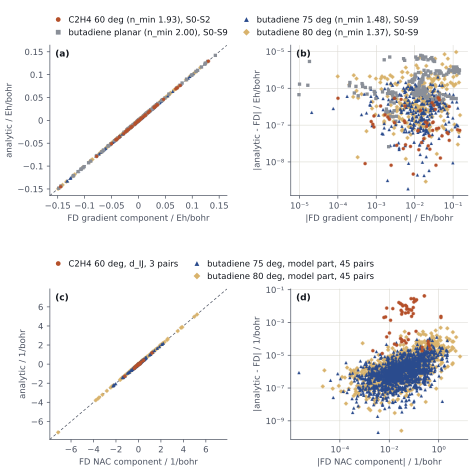
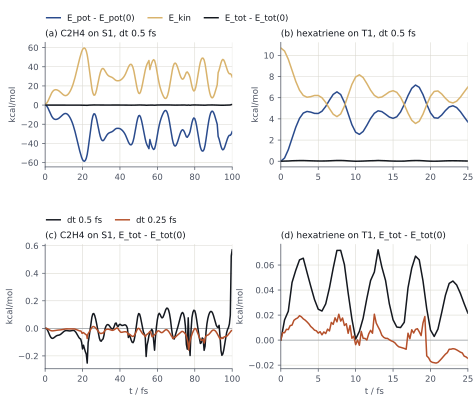

Chapter 4 of the REKS Studio user manual
After the solution check (Check the solution) the nuclear gradients of the SSR states and their nonadiabatic coupling vectors (NAC, , Nonadiabatic coupling vectors) drive a geometry optimization with DL-FIND or a trajectory with PyUNIxMD; every point is one psi4.gradient() call. Procedure: one gradient() → optimization → check → dynamics → check.
scf_type df for optimizations and trajectories (all runs on this page); pk (exact integrals) for an estimate of the DF error at single points.| Package | Install | Used by |
|---|---|---|
DL-FIND (libdlfind 0.0.3) |
pip install libdlfind (builds with gfortran) |
reks_dlfind.py |
| PyUNIxMD (commit 47cd61a) | git clone https://github.com/skmin-lab/unixmd, Cython libraries built as in its README; export PYTHONPATH=<unixmd>/src:<unixmd>:$PYTHONPATH |
reks_unixmd.py |
90° C₂H₄ from the RKS orbitals of first_c2h4_90.py (chapter 3, Worked inputs), S1 as the followed root and the NAC of all pairs of S0, S1, S2:
psi4.set_options({"scf_type": "df", "reference": "reks", "reks": [2, 2],
"si_reks_grad": [[1]],
"si_reks_nac": [[[0, 1], [0, 2], [1, 2]]]})
g, wfn = psi4.gradient("bhhlyp", return_wfn=True, restart_file="first_c2h4_90_rks.wfn.npy")=> Gradient request <=
Cassette States NAC pairs
-------------------------------------
0 S1 * S0/S1, S0/S2, S1/S2
-------------------------------------
States = SI states whose nuclear gradient is computed. * = followed state, returned by gradient().
S0 (cassette 0) added to the gradient targets (NAC partner).
S2 (cassette 0) added to the gradient targets (NAC partner).
[...]
Returned gradient of S1 (cassette 0).==> Coupled-perturbed REKS (CP-REKS, Z-vector) solver <==
For gradients of S1 (cassette 0);
NAC S0/S1, S0/S2, S1/S2 (cassette 0)
States S0, S1, S2 (cassette 0)
Equations 9: 3 states + 6 for NAC S0/S1 (cassette 0), S0/S2 (cassette 0), S1/S2 (cassette 0)
[...]
Z-vectors converged in 9 iterations.One CP-REKS solve covers every target (REKS_CPREKS_CONV). Wall time of the whole call (SCF included, 4 threads; two runs agree to 0.02 s):
si_reks_grad |
si_reks_nac |
Equations | Wall / s | Returned |
|---|---|---|---|---|
[[1]] |
— | 1 | 1.5 | S1 |
[[1, 0]] |
— | 2 | 1.6 | S1 |
[[1, 0, 2]] |
— | 3 | 1.6 | S1 |
[[1]] |
three pairs | 9 | 2.0 | S1 |
si_reks_grad, marked * in the output (SI_REKS_GRAD); [[1, 0]] prints S1 *, S0.SSR ROOT r GRADIENT CASSETTE 0 for every target (Nuclear gradients of SSR states) and SSR NAC I J CASSETTE 0 for every pair (Nonadiabatic coupling vectors).One gradient() with si_reks_grad listing every state and si_reks_nac listing every pair gives all analytic gradients and NAC vectors; one loop of energies at displaced geometries gives the finite-difference (FD) gradients of all states from the same SSR ENERGIES K=0 arrays and, from the same points, the FD couplings
with the SSR states written in their PPS, OSS and DES determinants (SSR(2,2)). For SI-SA-REKS(4,4) the FD covers the part of the coupling from the mixing of the configurations in the SI states,
from the FD of SSR HAMILTONIAN K=0 and SSR OVERLAP SPARSE K=0, against SSR NAC MODEL I J. Gradients and model part: five-point central differences; NAC of C₂H₄: the central formula above; h = 0.005 a₀; every displaced point reads the same REKS file; state phases of the gradient() run are aligned with the FD centre. BH&HLYP/6-31G(d), DF:
| Molecule | nmin | Quantity | Components | max |analytic − FD| | Calls |
|---|---|---|---|---|---|
| C₂H₄, 60° twist, C1; SSR(2,2) | 1.93 | gradients S0–S2 | 54 | 5.6 · 10⁻⁷ Eh a₀⁻¹ | 1 gradient(), 72 energies |
| s-trans-butadiene, distorted in plane; SI-SA-REKS(4,4), full 2S = 0 cassette | 2.00 | gradients S0–S9 | 200 | 7.7 · 10⁻⁶ Eh a₀⁻¹ | 1 gradient(), 80 energies |
| butadiene, both CH₂ twisted 75°, C1; as above | 1.48 | gradients S0–S9 | 300 | 2.2 · 10⁻⁶ Eh a₀⁻¹ | 1 gradient(), 120 energies |
| butadiene, both CH₂ twisted 80°, C1; as above | 1.37 | gradients S0–S9 | 300 | 9.7 · 10⁻⁶ Eh a₀⁻¹ | 1 gradient(), 120 energies |
| C₂H₄, as above | 1.93 | NAC S0/S1, S0/S2, S1/S2 | 18 each | 4.3 · 10⁻², 2.4 · 10⁻³, 2.9 · 10⁻² a₀⁻¹ | same run as the gradients |
| butadiene, 75° | 1.48 | model part, 45 pairs of S0–S9 | 1350 | 1.3 · 10⁻⁴ a₀⁻¹ (median 9.8 · 10⁻⁷) | same run as the gradients |
| butadiene, 80° | 1.37 | model part, 45 pairs of S0–S9 | 1350 | 5.0 · 10⁻⁴ a₀⁻¹ (median 1.5 · 10⁻⁶) | same run as the gradients |
nmin: smallest na (FON of the occupied member) over the SA pairs at the FD centre.

dft_radial_points 99, dft_spherical_points 590.SSR NAC MODEL I J agrees with the model formula above (S = I) from the FD of SSR HAMILTONIAN K=0 to 7 · 10⁻⁵; SSR NAC RESIDUAL I J / residual from the FD = 0.862 (S0/S1), 1.001 (S0/S2), 0.867 (S1/S2). Largest NAC component: 0.26 (S0/S1), 1.22 (S0/S2), 0.09 a₀⁻¹ (S1/S2).S0 of C₂H₄ from a 30° twist; optimize() searches a minimum of the energy of the followed root and stops at a stationary point:
"""S0 of C2H4, SSR(2,2) BH&HLYP/6-31G(d), DF, optimized with DL-FIND.
python opt_c2h4.py -> opt_c2h4.xyz, opt_c2h4_reks.wfn.npy, opt_c2h4.out"""
import psi4
from reks_dlfind import optimize
psi4.set_output_file("opt_c2h4.out", False)
psi4.set_memory("2 GB")
psi4.set_num_threads(4)
mol = psi4.geometry("""
0 1
C 0.310000 0.170000 0.895000
C 0.310000 0.170000 -0.435000
H 0.310000 1.090840 1.461300
H 0.310000 -0.750840 1.461300
H -0.150420 0.967471 -1.001300
H 0.770420 -0.627471 -1.001300
symmetry c1
no_com
no_reorient
""")
# seed orbitals: RKS with the same functional and basis
psi4.set_options({"basis": "6-31g(d)", "scf_type": "df"})
e, wfn = psi4.energy("bhhlyp", return_wfn=True)
wfn.to_file("opt_c2h4_rks.wfn")
# optimize S0: the first entry of si_reks_grad is the followed root
psi4.set_options({"reference": "reks", "reks": [2, 2], "si_reks_grad": [[0]]})
e, wfn = optimize("bhhlyp", mol, restart_file="opt_c2h4_rks.wfn.npy")
print(f"E(S0) = {e:.10f}")
mol.save_xyz_file("opt_c2h4.xyz", True)
wfn.to_file("opt_c2h4_reks.wfn")python opt_c2h4.pyDL-FIND prints its cycles to the terminal; the last one:
Testing convergence in cycle 8
Energy 2.6943E-07 Target: 1.0000E-06 converged? yes
Max step 1.2440E-03 Target: 1.8000E-03 converged? yes component 7
RMS step 4.8905E-04 Target: 1.2000E-03 converged? yes
Max grad 9.0958E-06 Target: 4.5000E-04 converged? yes component 12
RMS grad 3.4729E-06 Target: 3.0000E-04 converged? yes
Convergence reached
Optimisation converged
----------------------
Final converged energy: -78.528630422662
[...]
E(S0) = -78.5286304227opt_c2h4.out, last point:
gradient: seeding orbital guess from dlfind_orbitals.wfn.npy (GUESS set to READ).
[...]
=> Gradient request <=
Cassette States
----------------
0 S0 *
[...]
8A -0.299767 (a) n_a = 1.997742
9A -0.018589 (b) n_b = 0.002258restart_file seeds the first point; each later point reads the orbitals of the previous one.no_com, no_reorient: DL-FIND and PyUNIxMD move the atoms in the input frame. Keep every atom off the Cartesian axes (two coordinates near zero), as the shifted inputs here do: an atom within ~10⁻⁸ a₀ of an axis makes Psi4 fail while building the basis set (Unrecognized point group bits).T1 of all-trans-hexatriene, SI-SA-REKS(6,6) with the π window of Higher spin states and the SI cassette on 2S = 2 (root 0 = T1). The window places the RKS orbitals at the first REKS point and is then switched off, since it moves the columns of any read guess (GUESS_ACTIVE_WINDOW). From opt_hexatriene.py:
# REKS(6,6) at the start geometry: pi window from the RKS orbitals (LUMO+2 is sigma*), triplet SI cassette
psi4.set_options({"reference": "reks", "reks": [6, 6],
"guess_active_window": ["HOMO-2", "HOMO-1", "HOMO", "LUMO", "LUMO+1", "LUMO+3"],
"sa_reks_extra": [[1, 1, 1, 1, 1, 1, 0, 0, 0, 0, 0, 0]],
"si_reks_2spin": [2]})
e, wfn = psi4.energy("bhhlyp", return_wfn=True, restart_file="opt_hexatriene_rks.wfn.npy")
wfn.to_file("opt_hexatriene_start.wfn")
# optimize T1: later points read the REKS orbitals of the previous point, the window is off
psi4.set_options({"guess_active_window": [], "si_reks_grad": [[0]]})
e, wfn = optimize("bhhlyp", mol, restart_file="opt_hexatriene_start.wfn.npy")| Geometry | C3–C4 / Å | C1–C3, C2–C4 / Å | C3–C5, C4–C6 / Å | E(T1) / Eh | T2 − T1, T3 − T1 / eV |
|---|---|---|---|---|---|
start (first_hexatriene.py) |
1.347 | 1.447 | 1.342 | — | — |
| T1 minimum, 11 gradients, 5.5 min on 8 threads | 1.481 | 1.365 | 1.411 | −233.1785176650 | 2.489, 3.977 |
The minimum is planar (|z| ≤ 6 · 10⁻⁸ Å).
yes in the last cycle and Optimisation converged. Necessary, not sufficient: the end point is a stationary point, and the gradient criteria cannot tell a minimum from a saddle point.grep "n_a =" opt_c2h4.out: here 1.999484 → 1.997742, and no [GRAD-FON] … pinned line (FON pinned at a bound, symmetry-broken charges).S0 * (T1 * for hexatriene) in every Gradient request.reks_dlfind: SCFConvergenceError; stopping DL-FIND; DL-FIND then ends with Optimisation converged, which does not count, and the script stops with Psi4's error.C₂H₄ on S1 from the S0 geometry of opt_c2h4.py, three SSR states, 200 steps of 0.5 fs:
"""Surface hopping of C2H4 on S1 from opt_c2h4.py, SSR(2,2) BH&HLYP/6-31G(d), DF, PyUNIxMD.
export PYTHONPATH=/path/to/unixmd/src:/path/to/unixmd:$PYTHONPATH
python md_c2h4.py -> md/MDENERGY, md/SHSTATE, md/MOVIE.xyz, md_c2h4.out"""
import psi4
import mqc
from reks_unixmd import REKS, molecule
psi4.set_output_file("md_c2h4.out", False)
psi4.set_memory("2 GB")
psi4.set_num_threads(4)
psi4.set_options({"basis": "6-31g(d)", "scf_type": "df",
"reference": "reks", "reks": [2, 2], "fail_on_maxiter": False})
mol = molecule("opt_c2h4.xyz", nstates=3, temperature=300)
qm = REKS(mol, "bhhlyp", restart_file="opt_c2h4_reks.wfn.npy")
md = mqc.SH(molecule=mol, istate=1, dt=0.5, nsteps=200, unit_dt="fs")
md.run(qm=qm)python md_c2h4.pynstates lowest roots of cassette 0 (Adiabatic (SSR) states); the default SSR(2,2) cassette (PPS, OSS, DES) has three singlet roots, S0, S1, S2.REKS sets si_reks_grad to the running state of PyUNIxMD alone (the followed root) and si_reks_nac to all state pairs; the pairs make every state a CP-REKS target (One gradient() call), so one gradient() returns the energies and gradients of all states and the NAC vectors of all pairs. Step 0 in md_c2h4.out:gradient: seeding orbital guess from .../opt_c2h4_reks.wfn.npy (GUESS set to READ).
[...]
Cassette States NAC pairs
-------------------------------------
0 S1 * S0/S1, S0/S2, S1/S2
[...]
Equations 9: 3 states + 6 for NAC S0/S1 (cassette 0), S0/S2 (cassette 0), S1/S2 (cassette 0)molecule() reads the geometry and draws one set of velocities from the Maxwell–Boltzmann distribution at 300 K (seed=1); the instantaneous temperature of this draw, printed at step 0, is 93.6 K. PyUNIxMD counts 3N − 6 = 12 degrees of freedom; over many draws the printed value has mean ≈ 370 K and standard deviation ≈ 140 K. Another seed gives another draw. One demonstration trajectory: a study samples initial conditions (e.g. Wigner) and runs an ensemble.mqc.SH default; option dec_correction); NAC phases are aligned between steps (l_adj_nac, default on).#INFO STEP State Kinetic(H) Potential(H) Total(H) Temperature(K) Norm.
INFO 0 1 0.00177932 -78.22228694 -78.22050762 93.643953 1.00000
INFO 1 1 0.00224421 -78.22275032 -78.22050611 118.110614 1.00000
INFO 2 1 0.00389882 -78.22441616 -78.22051734 205.191560 1.00000
[...]
INFO 199 1 0.05085347 -78.27052303 -78.21966957 2676.372582 1.00000
INFO 200 1 0.04679572 -78.26639469 -78.21959897 2462.816786 1.00000md/MDENERGY energies per step, md/SHSTATE running state, md/SHPROB hopping probabilities, md/MOVIE.xyz geometries and velocities.Hexatriene on T1 from the minimum of opt_hexatriene.py, the three lowest triplet roots: with si_reks_2spin [2] cassette 0 is the triplet cassette, and REKS reads the roots of cassette 0 whatever its 2S. From md_hexatriene.py:
psi4.set_options({"basis": "6-31g(d)", "scf_type": "df",
"reference": "reks", "reks": [6, 6],
"sa_reks_extra": [[1, 1, 1, 1, 1, 1, 0, 0, 0, 0, 0, 0]],
"si_reks_2spin": [2],
"d_convergence": 1e-6, "reks_cpreks_conv": 1e-8,
"fail_on_maxiter": False})
mol = molecule("opt_hexatriene.xyz", nstates=3, temperature=300)
qm = REKS(mol, "bhhlyp", restart_file="opt_hexatriene_reks.wfn.npy")
md = mqc.SH(molecule=mol, istate=0, dt=0.5, nsteps=50, unit_dt="fs")
md.run(qm=qm)One step (T1, T2, T3 gradients and three NAC vectors) takes 39 s on 8 threads (31–52 s over 50 steps).
fail_on_maxiter False: an SCF that reaches maxiter prints Energy and/or wave function did not converge, but proceeding anyway. and the step continues; grep -c "did not converge" md_*.out counts such steps.d_convergence 1e-6, reks_cpreks_conv 1e-8. With the defaults (1e-8, 1e-9) the SCF density change stays at 2–3 · 10⁻⁷ from iteration ~30 and the CP-REKS residual at 1.8 · 10⁻⁹; na of pair (a, f) stays 2.000000 along the run.Total energy (column Total of md/MDENERGY), for the runs above and for reruns from the same start with dt=0.25 (C₂H₄ nsteps=400, hexatriene nsteps=100):
| Molecule | dt / fs | Steps | Drift / kcal mol⁻¹ | Range / kcal mol⁻¹ | Largest step / kcal mol⁻¹ | Span of Epot / kcal mol⁻¹ |
|---|---|---|---|---|---|---|
| C₂H₄ | 0.5 | 200 | +0.57 | 0.82 | 0.43 | 58.7 |
| C₂H₄ | 0.25 | 400 | −0.015 | 0.17 | 0.033 | 58.6 |
| hexatriene | 0.5 | 50 | +0.022 | 0.072 | 0.028 | 7.2 |
| hexatriene | 0.25 | 100 | −0.015 | 0.039 | 0.031 | 7.1 |

dt shrinks the range of Etot 4.8-fold for C₂H₄ over 100 fs (4.1-fold over the first 50 fs; dt² error of velocity Verlet: 4-fold) and 1.9-fold for hexatriene over 25 fs.grep "n_a =" md_c2h4.out, continuous. When na crosses 1 (90° twist of C₂H₄; seven times in the dt 0.5 fs run, first at steps 40–41 and 78–79) the label (a) switches between orbitals 8A and 9A. If na and the Total column jump together between two steps, the solution has changed. Steps with an unconverged SCF: SCF hits MAXITER or continues unconverged.md/SHSTATE. C₂H₄, dt 0.5 fs: on S1 to 56.0 fs, on S2 to 92.5 fs, then on S1. C₂H₄, dt 0.25 fs: S1 → S2 at 37.5, 59.25 and 69.5 fs, back at 39.5 and 67.5 fs; at 37.5, 59.25 and 69.5 fs the velocities are rescaled uniformly (no solution to find rescale factor, but velocity is simply rescaled). Hexatriene: T1 throughout. The followed root is an energy index, not a state character (Quasi-degenerate roots).Scripts in run order, in one directory with reks_dlfind.py and reks_unixmd.py (imported, not run).
| File | Calculation | Result |
|---|---|---|
reks_dlfind.py |
optimize(method, molecule, restart_file, tolerance=4.5e-4, maxcycle=100): DL-FIND L-BFGS in delocalized internal coordinates on the followed root; tolerance: largest gradient component in those coordinates, atomic units |
— |
reks_unixmd.py |
molecule(xyz_file, nstates, temperature, charge=0, seed=1), REKS(molecule, method, restart_file): PyUNIxMD QM interface, roots of cassette 0 |
— |
first_c2h4_90.py |
Worked inputs; python first_c2h4_90.py rks writes first_c2h4_90_rks.wfn.npy, read by One gradient() call |
— |
opt_c2h4.py |
S0 of C₂H₄, SSR(2,2) BH&HLYP/6-31G(d), DF, RKS seed, DL-FIND | E(S0) = −78.5286304227 Eh, 8 gradients |
md_c2h4.py |
surface hopping on S1 from the opt_c2h4.py geometry, 3 states, 200 × 0.5 fs |
hops S1 → S2 at 56.0 fs, back at 92.5 fs; Etot drift +0.57 kcal mol⁻¹, range 0.82 kcal mol⁻¹ |
opt_hexatriene.py |
T1 of all-trans-hexatriene, SI-SA-REKS(6,6) BH&HLYP/6-31G(d), DF, π window, DL-FIND | E(T1) = −233.1785176650 Eh, 11 gradients, 5.5 min on 8 threads |
md_hexatriene.py |
surface hopping on T1 from the opt_hexatriene.py geometry, 3 triplet states, 50 × 0.5 fs |
T1 throughout; Etot drift +0.022 kcal mol⁻¹, range 0.072 kcal mol⁻¹; 39 s per step on 8 threads |